여덟 개는 어떤 일을 나눠 맡나요
영상은 영상 제작 스킬을 많이 써 본 뒤 여덟 개만 남겼어요. 기준은 서로 일이 겹치지 않는 것이에요. 그래서 무엇을 만들려는지부터 정하면 고를 게 금방 좁혀져요.
| 이름 | 맡는 일 | 넣는 것 | 영상 위치 |
|---|---|---|---|
| Huashu Motion | 사이트 내용으로 만드는 출시 영상 | 사이트나 제품 | 00:45 |
| rossark-motion | 그림과 캐릭터에 움직임 넣기 | 그림, 마스코트, 아이콘 | 03:50 |
| Take One | 이야기로 푸는 출시 영상·광고·뮤직비디오 | 한 줄 요청 | 05:00 |
| Reanimate | 남의 애니메이션을 내 프로젝트로 복제 | 사이트, 영상, GIF(Graphics Interchange Format) | 06:56 |
| Argo | 앱을 직접 눌러 녹화한 데모 영상 | 실행 중인 앱 | 08:58 |
| Explainroo | 말과 화면이 맞물리는 설명 영상 | 주제 | 09:49 |
| Video Director | 규칙과 검사 도구로 영상 만들기 | 영상 요청 | 11:21 |
| Earshot | 에이전트가 소리를 읽고 맞추게 하기 | 영상 클립 | 12:57 |
설치는 대부분 같은 순서예요
방법은 둘이에요. 에이전트에게 저장소 주소를 주고 설치해 달라고 하거나, 명령을 터미널에서 직접 돌려요. 아래 README 화면에 두 방법이 나란히 있어요. 위가 에이전트에게 보낼 문장, 아래가 npx 명령이에요.
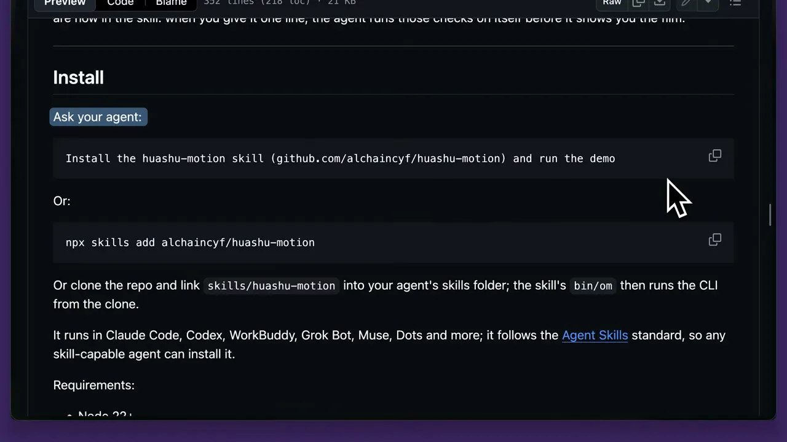
명령을 돌리면 먼저 어느 에이전트에 설치할지 물어요. 맨 아래 Selected 줄처럼 여러 개를 함께 고를 수 있어요.
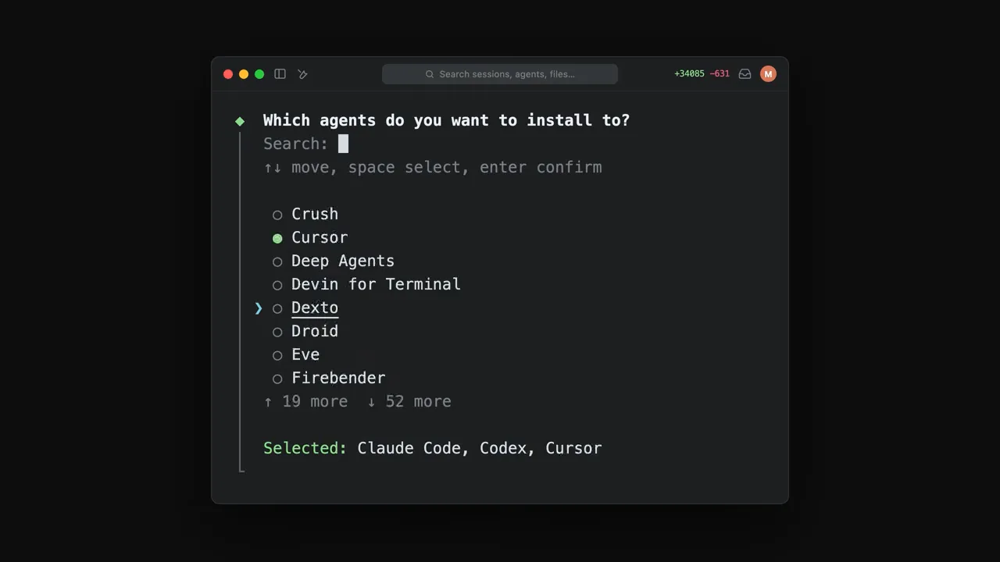
다음은 범위예요. 영상은 왼쪽의 현재 프로젝트를 권해요. 스킬의 이름과 설명은 켜 둔 동안 컨텍스트를 차지하는데, 프로젝트에만 깔면 다른 작업에서는 읽히지 않기 때문이에요.
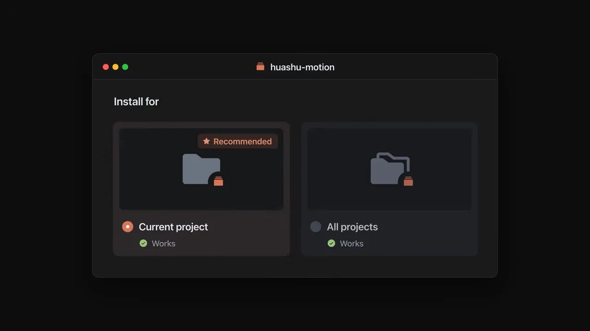
화면에 나온 명령은 이렇게 모을 수 있어요. Argo, Explainroo, Video Director는 영상이 명령을 보여 주지 않고 저장소 안내를 따르라고만 해요.
npx skills add alchaincyf/huashu-motion
npx skills@latest add rossark0/rossark-motion-skill
npx skills add talsiach/take-one -g -a claude-code
npx skills add NiazMorshed2007/reanimate -g데모 터미널 맨 위에는 claude --dangerously-skip-permissions가 계속 보여요. 권한 확인을 건너뛰는 실행 방식이에요. 처음 받은 스킬을 따라 돌릴 때 이 방식까지 그대로 쓸지는 따로 판단하는 게 좋아요.
출시 영상: Huashu Motion과 Take One
출시 영상을 만드는 스킬은 둘이에요. 재료를 다루는 방식이 달라요. Huashu Motion은 사이트의 말과 모습을 영상으로 옮기고, Take One은 제품을 쓰는 사람의 짧은 이야기로 연기해요.
Huashu Motion: 박자에 맞춰 자르는 출시 영상
이 저장소는 Anthropic의 Claude Motion을 따라 만든 공개 버전이에요. 오른쪽의 잠긴 창과 48,194 waiting은 영상이 말하는 '대부분은 아직 못 쓰는 도구'를 그린 그래픽이에요.
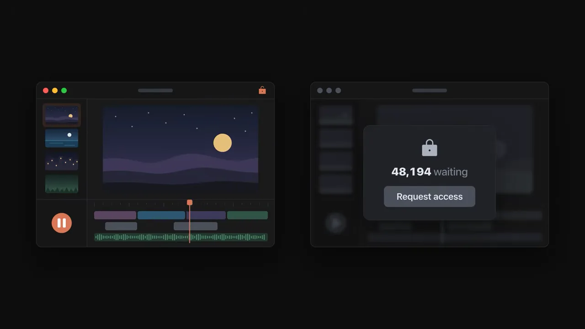
요금제 그래픽을 보면 Free, Pro, Max에는 없고 Team과 Enterprise 칸에만 Claude Motion 표시가 붙어 있어요.
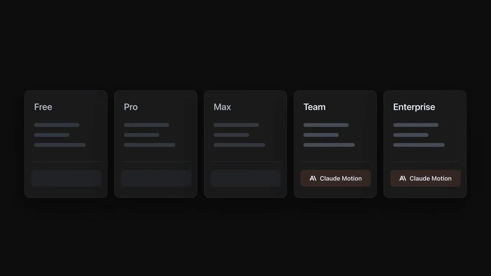
사이트를 주면 먼저 재료를 모아요. 오른쪽 패널의 Colours 세 칸, Fonts의 Georgia, Wording이 사이트에서 뽑아낸 값이에요.
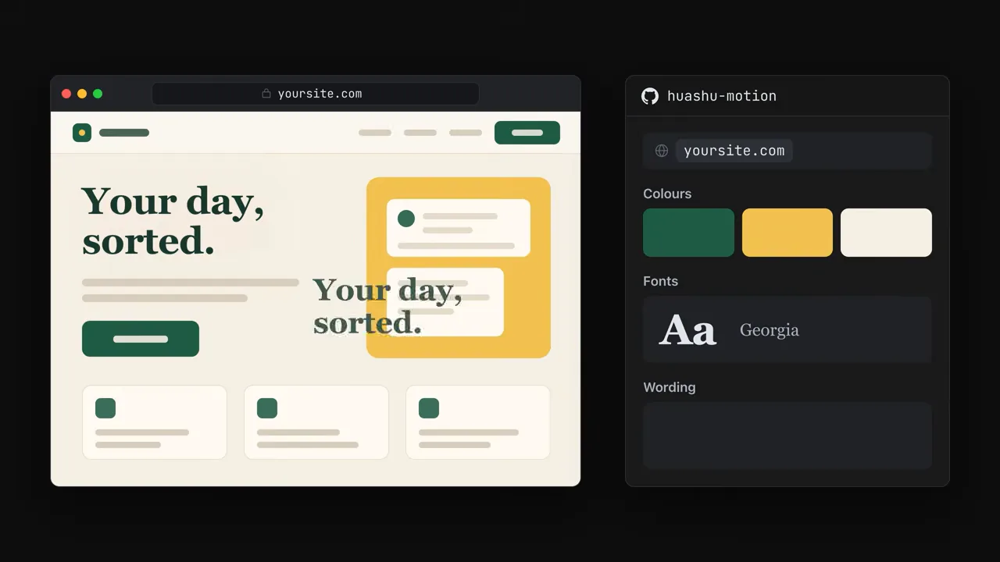
순서가 특이한 건 음악이에요. 화면을 만들기 전에 음악을 먼저 쓰고, 그 박자에 맞춰 전체를 잘라요. 타임라인 오른쪽의 Peak 깃발이 음악의 정점 자리예요. 그래서 화면에 뭔가 나타나는 순간 소리도 함께 떨어져요.
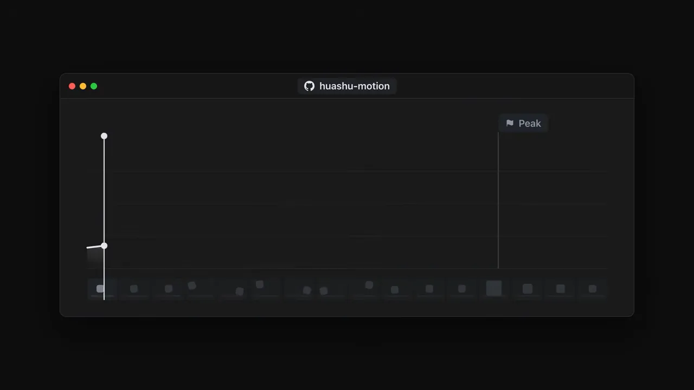
여기에 실제 출시 영상을 연구해 만든 감독 규칙이 붙어요. 첫 3초 안에 훅이 있어야 하고, 중간에 강한 움직임이 있어야 하며, 가장 큰 순간 직전에는 멈춤이 있어야 해요. 보여 주기 전에 자기 결과물을 이 규칙으로 먼저 검사해요.
설치된 폴더를 열면 구성이 보여요. SKILL.md 옆의 references에 colour.md, director.md 같은 분야별 문서가 있어요. 영상은 소리, 음악, 연출 문서와 영상 유형별 문서가 따로 있다고 설명해요.
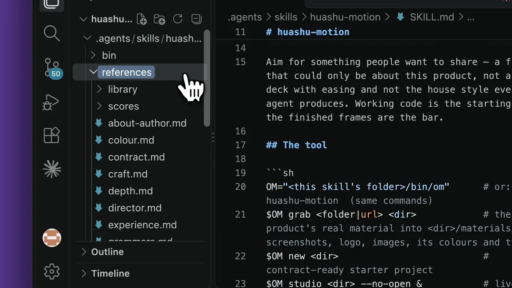
쓸 때는 슬래시 명령에 요청을 붙여요. 영상은 예전에 만든 랜딩 페이지를 애니메이션으로 만들어 달라고 했어요. 계획을 검토하고 나면 시안 세 개를 directions.md로 내놓아요. 화면의 A안 Telemetry trailer에는 아이디어, 구성, 느낌, 약점까지 적혀 있어요.
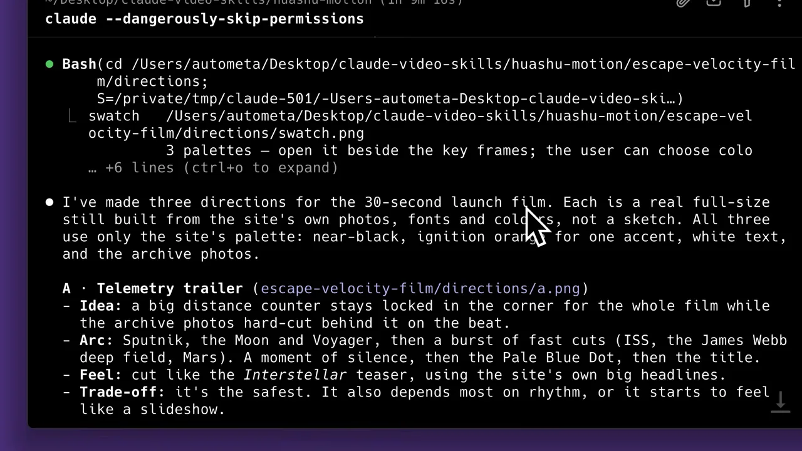
한 안을 고르면 혼자 빌드하고 대시보드를 열어요. 원하는 프레임을 눌러 댓글을 달면 그 위치와 함께 에이전트에게 전달돼요. 상단의 Version 11은 수정이 여러 번 돌았다는 표시이고, 최종본은 33.2초예요.
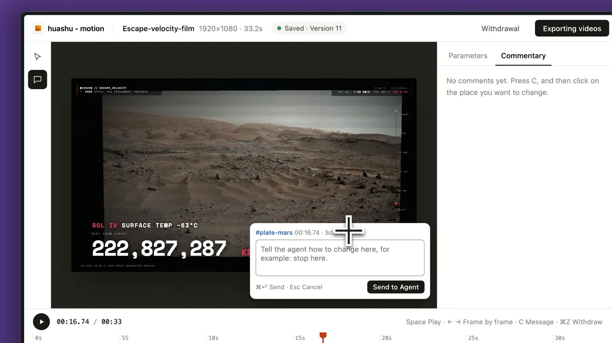
Take One: 한 줄에서 완성 영상까지
왼쪽 Huashu Motion은 사이트를 바로 영상으로 옮기고, 오른쪽 Take One은 번호 붙은 장면으로 이야기를 짜요. 영상 비교의 핵심이 이 그림 한 장에 있어요.
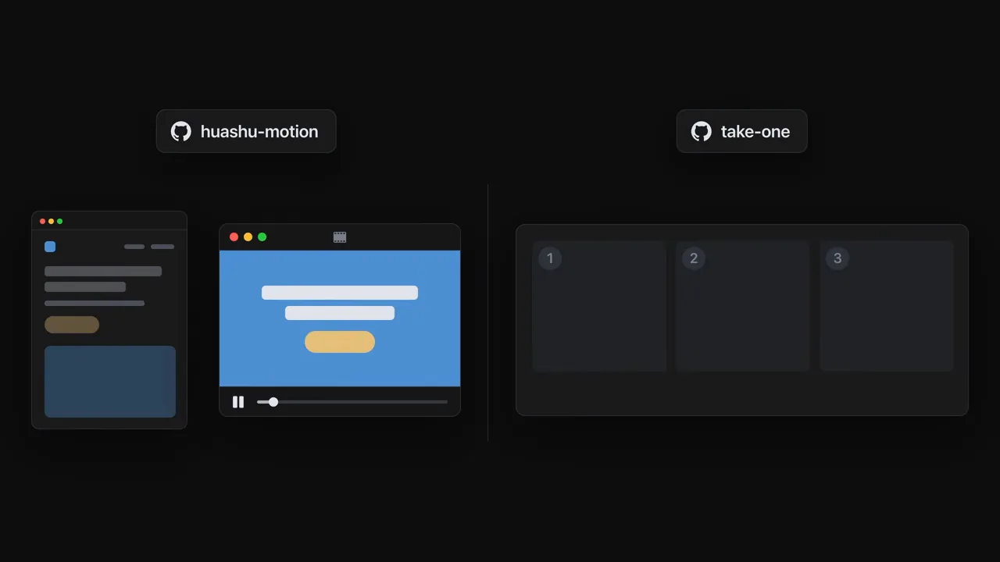
스킬 하나가 모든 단계를 맡아요. 화면의 네 칸 Brand, Idea, Music, Edit가 그 흐름이고, 영상이 끝나면 함께 올릴 게시글까지 써 줘요. 출시 영상 말고 광고나 뮤직비디오도 만들 수 있어요.
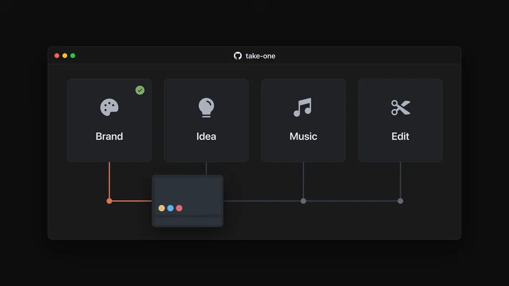
설치 안내에서 눈여겨볼 곳은 터미널 명령의 두 번째 줄 doctor.sh예요. 무엇이 빠졌는지, 조각마다 어디에 쓰는지 알려 줘요.
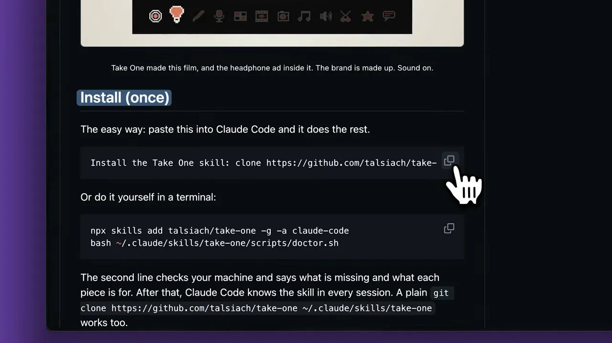
-g라 모든 세션에서 스킬을 읽어요. 영상이 앞서 권한 프로젝트 단위 설치와는 달라요.
영상 05:40에서 보기
요청을 받으면 질문으로 의도를 먼저 굳혀요. 그다음 전략가, 크리에이티브 디렉터, 스토리보드 작가 역할로 나눠 기획해요. 스토리보드 표는 장면마다 시간, 일어나는 일, 화면 문구를 적어요.
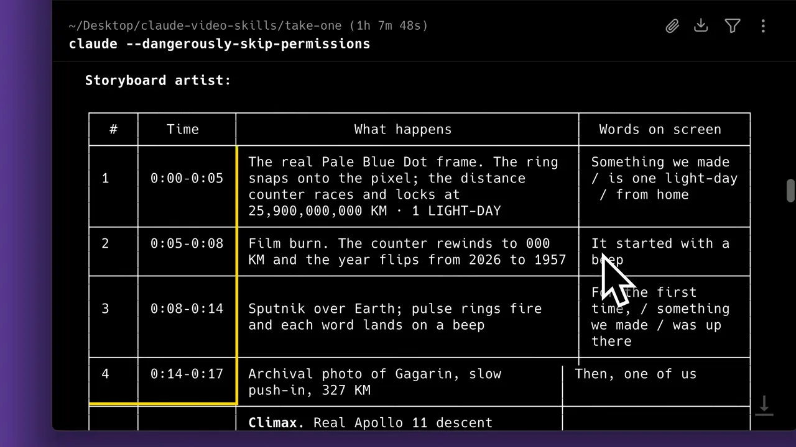
빌드는 정말 오래 걸린다고 영상이 먼저 경고해요. 그래픽에는 1:47:20이 찍혀 있지만, 이 값이 측정치인지는 영상이 말하지 않아요. 넉넉히 시간을 잡아 두는 정도로 받아들이면 돼요.
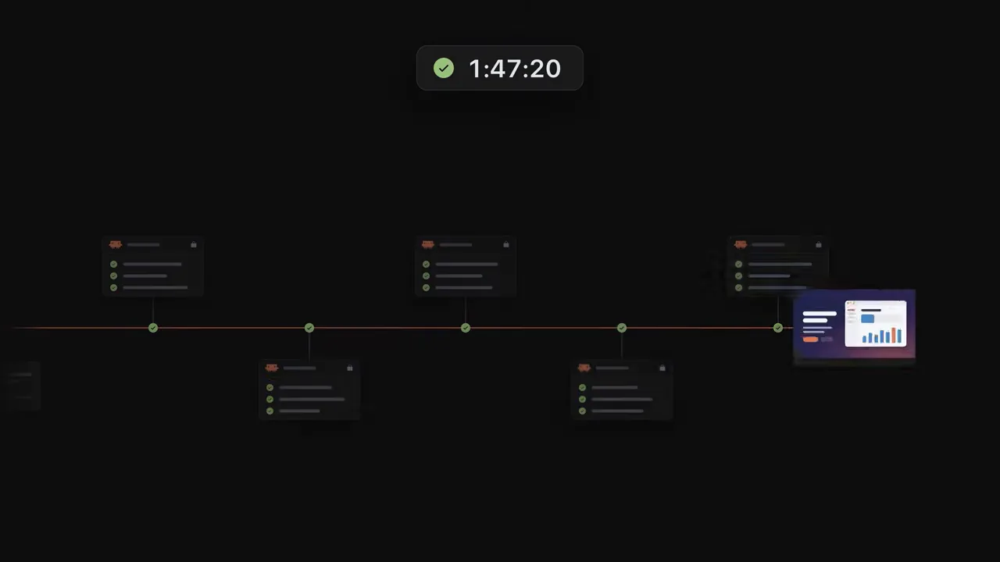
끝나면 Review room이 열려요. 오른쪽에서 이 프레임에 메모를 남기거나 영상 전체에 메모를 남길 수 있고, Send notes to Claude를 누르면 빌드 중인 세션이 받아 가요. 상단 Compare with로 버전끼리 비교도 돼요.
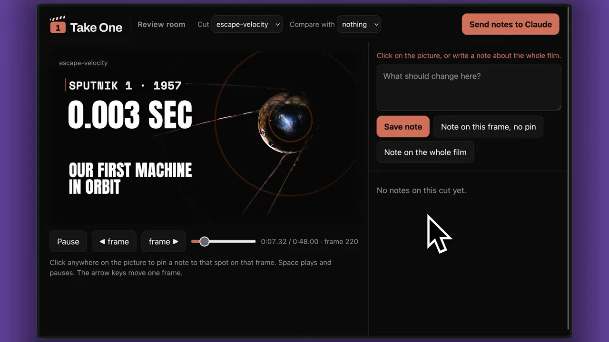
버전이 나올 때마다 별도의 리뷰어가 점수를 매겨요. 오른쪽 Fresh context 표시가 작업 과정을 보지 않았다는 뜻이고, 막대의 Pass mark가 합격선이에요. 아래면 다시 돌아가는데, 위쪽 Round 1/3처럼 세 번까지예요.
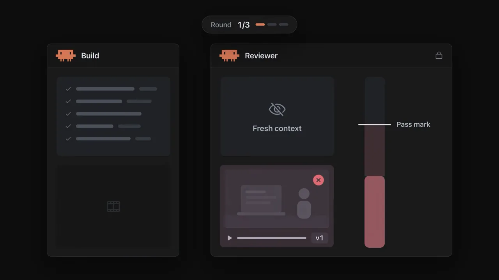
사이트 움직임: rossark-motion과 Reanimate
이번 두 개는 영상 파일보다 사이트 안의 움직임을 다뤄요. rossark-motion은 움직이는 법을 규칙으로 가르치고, Reanimate는 이미 있는 움직임을 재서 베껴요.
rossark-motion: 그림이 자연스럽게 움직이는 규칙
제작자가 자기 앱의 일러스트를 살리려고 만든 스킬이에요. 화면의 화분, 로켓, 구름처럼 그려진 것이면 캐릭터, 마스코트, 아이콘, 로고까지 대부분 돼요.
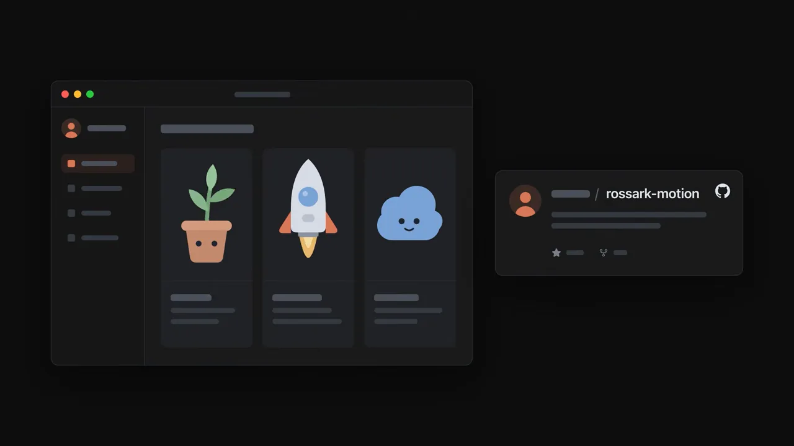
핵심 규칙 하나는 몸 전체가 같은 타이밍으로 움직여야 한다는 것이에요. 한 부분만 먼저 튀어 나가지 않게요. 또 그림 옆에 MOTION.md 노트를 두고, 이 캐릭터가 할 수 있는 동작과 없는 동작을 적어요. 화면 왼쪽의 체크와 엑스 표시가 그 목록이에요. wave 같은 요청이 올 때마다 이 파일을 다시 읽어요.
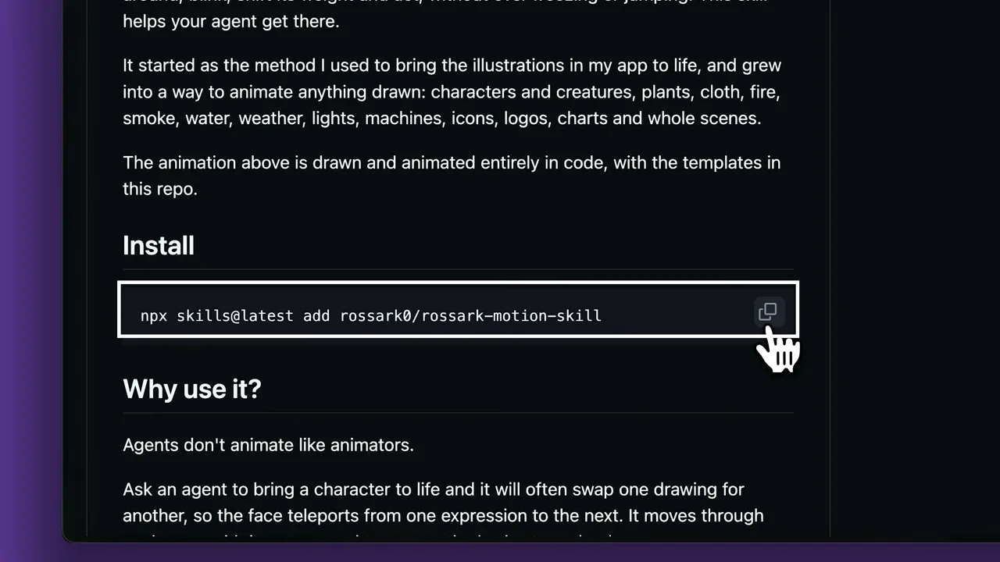
요청은 스킬 이름 없이 말로 해도 돼요. 화면의 문장은 플래시 카드 학습 앱을 만들되, 맞고 틀릴 때 반응하는 작은 마스코트를 넣어 달라는 내용이에요. 바로 아래 줄에서 rossark-motion-skill이 불려요.
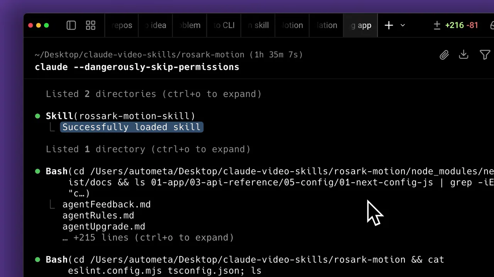
만들어진 Sprout 앱의 오른쪽 새싹 마스코트를 보세요. 문제를 푸는 동안에는 웃고 있어요.
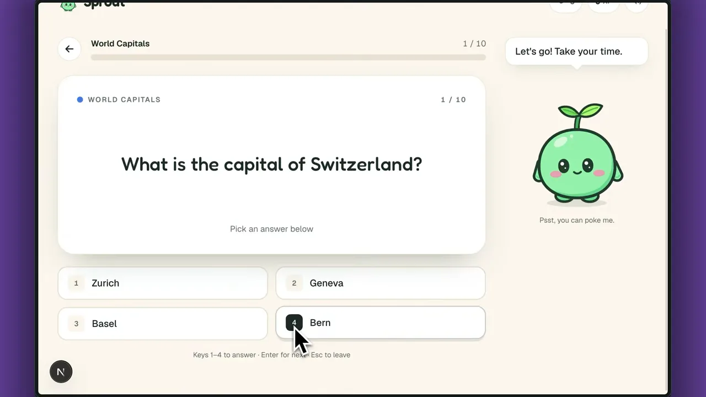
틀리면 표정이 처지고 말풍선이 Hmm, tricky!로 바뀌어요. 영상은 맞출 때와 틀릴 때 반응이 달랐다고 전해요.
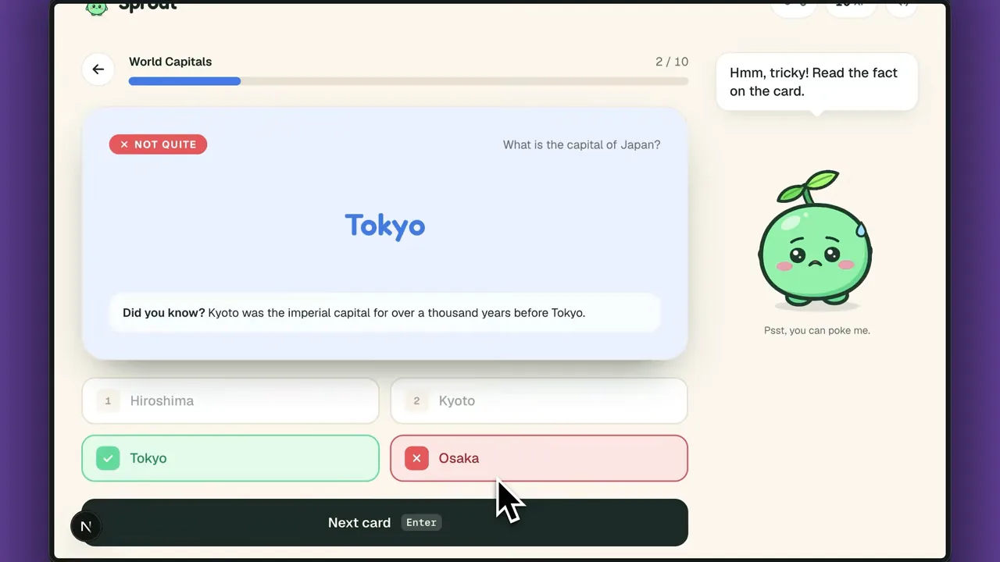
Reanimate: 재고, 베끼고, 비교하기
남의 사이트에서 본 애니메이션을 내 프로젝트에 넣고 싶을 때 써요. 사이트, 영상, GIF를 주면 눈대중 대신 한 프레임씩 재요. 아래 그림이 그 순환이에요.
비교 화면에서 왼쪽 original과 오른쪽 copy의 프레임 띠를 맞대요. 아래 막대의 furthest off: timing이 지금 가장 어긋난 항목이에요. 이걸 먼저 고치고 다시 재요.
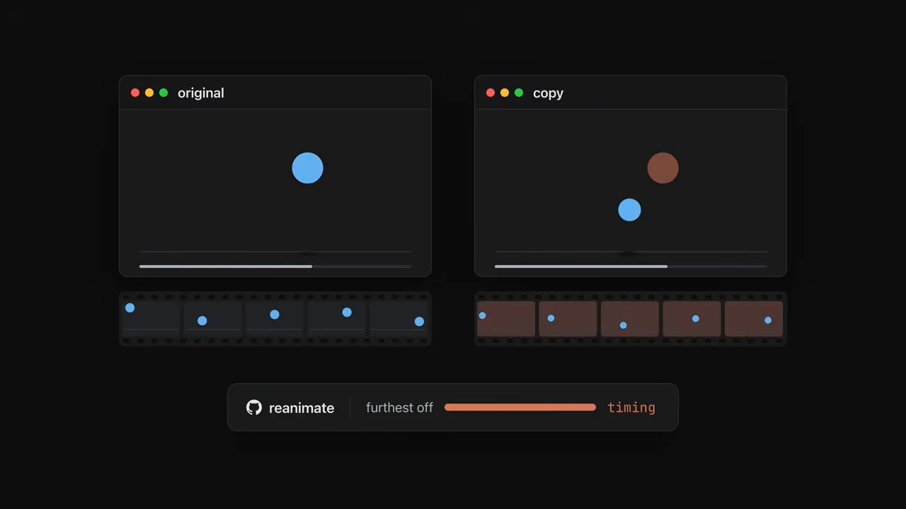
기본값은 움직임만 복사하는 것이에요. 오른쪽 복제본 카드가 회색인 이유예요. 위쪽 토글을 Exact로 바꾸듯 정확히 맞춰 달라고 하면 모습까지 복사해요.
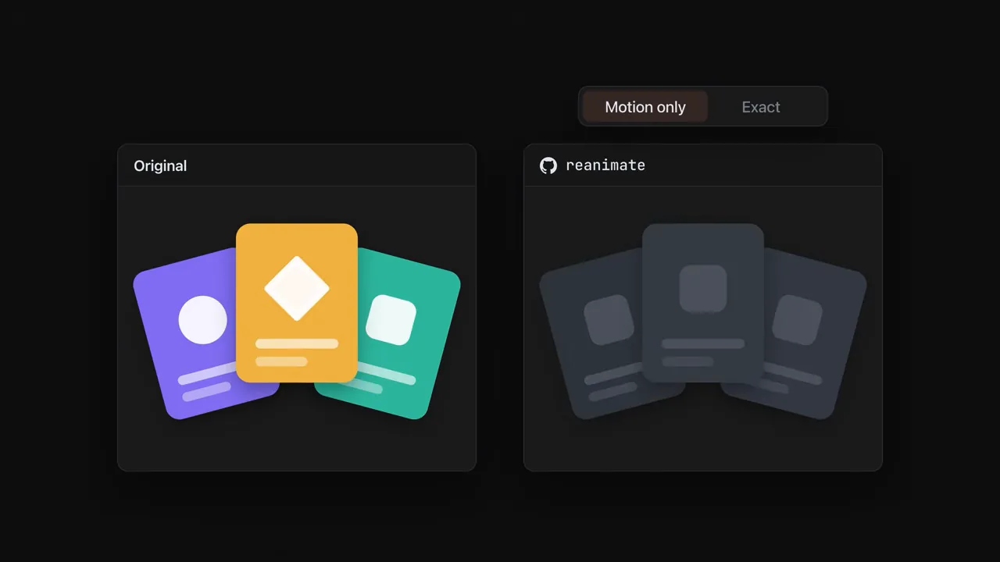
README의 사용 예시를 보면 쓰임이 잘 드러나요. 사이트의 히어로 등장, 영상의 특정 구간, GIF의 카드 호버, 내 로고로 바꾼 마키까지 요청 형태가 달라요.
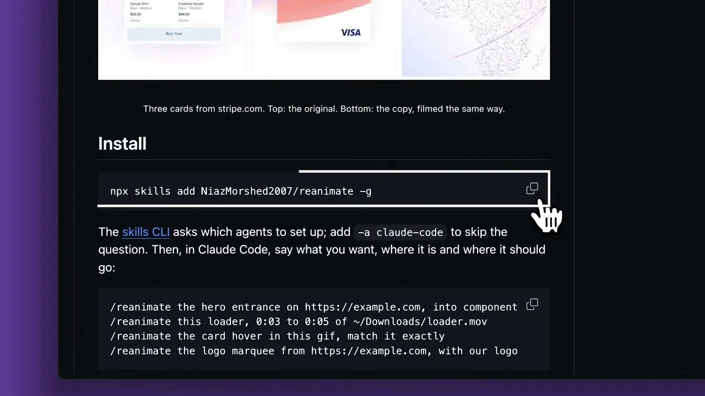
0:03 to 0:05처럼 구간을 지정할 수도 있어요.
영상 07:44에서 보기
영상의 시험은 복제보다 응용에 가까웠어요. /reanimate에 lusion.co를 주고, 이 사이트에서 영감을 받아 피트니스 앱 랜딩 페이지를 만들어 달라고 했어요.
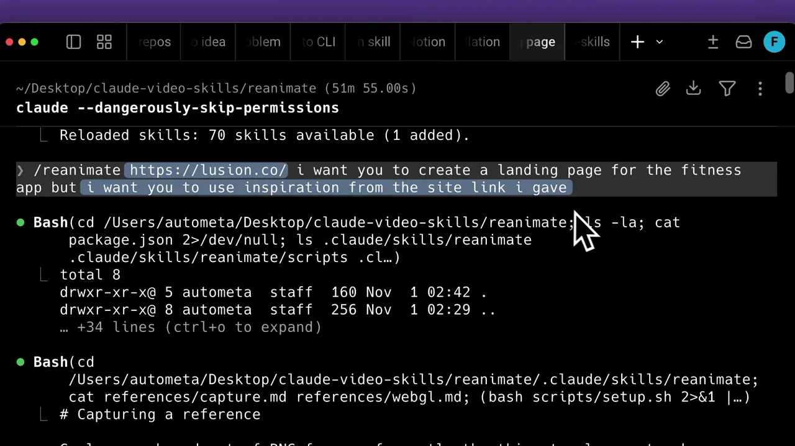
결과물에는 원본 사이트처럼 큰 제목과 곡선 띠가 있어요. 영상은 애니메이션이 원본과 꽤 비슷하면서 요청한 사이트 성격에도 맞았다고 평가해요.
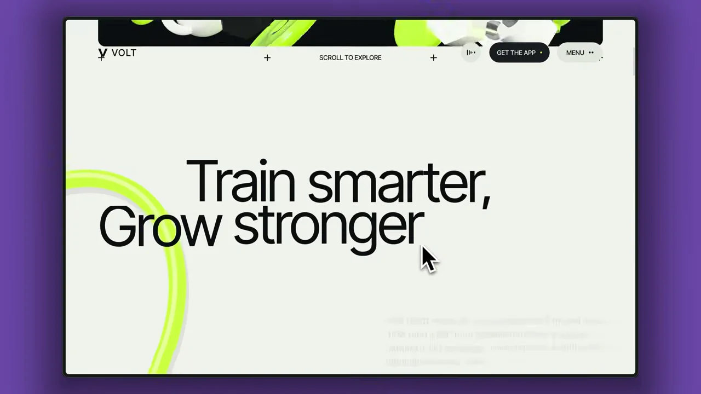
앱 데모와 설명 영상: Argo와 Explainroo
둘 다 내레이션이 있는 영상을 만들어요. 다만 Argo는 실제 앱을 녹화하는 쪽이고, Explainroo는 주제만 받아 화면까지 만드는 쪽이에요.
Argo: 앱을 눌러 보며 찍는 데모
가입 전에 앱이 돌아가는 모습을 보여 주고 싶을 때 써요. 브라우저로 앱을 열어 클릭하며 녹화하고, 각 장면을 대사 길이만큼 머물러요. 화면의 Book, 10:00, Confirm, Done이 차례로 누를 동작이고, 첫 줄의 막대가 그 동작에 붙은 대사예요.
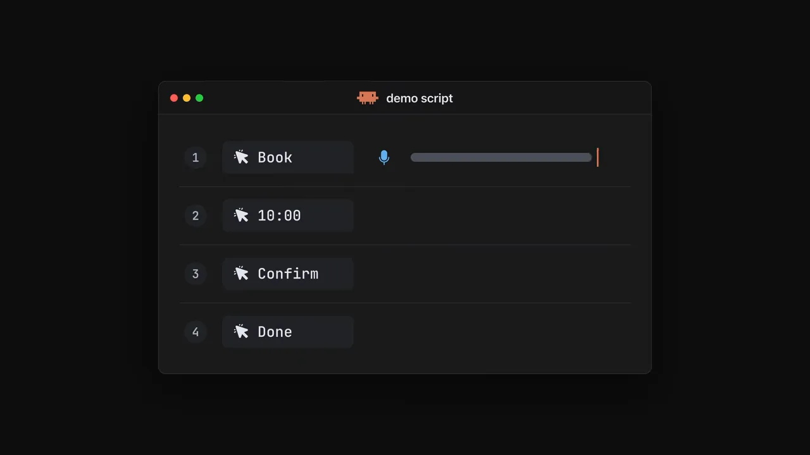
README의 Writing a demo를 보면 데모는 스크립트와 장면 목록 두 파일이에요. 코드의 narration.mark와 narration.durationFor가 대사 길이에 맞춰 화면을 기다리게 해요. 녹화 도구는 Playwright예요.
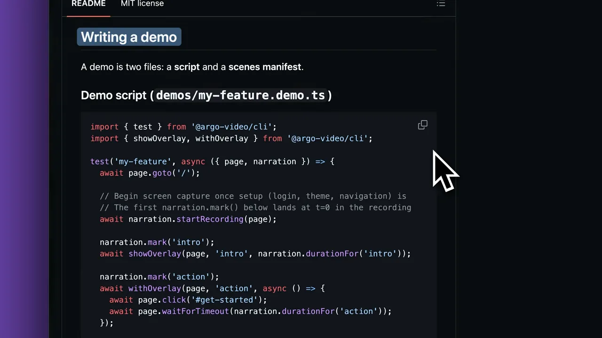
예약 앱으로 시험한 결과에서는 You're booked at Loft Living 줄만 밝고 나머지가 어두워요. 오른쪽 위의 Confirmation email sent instantly가 대사를 받쳐 주는 라벨이고요.
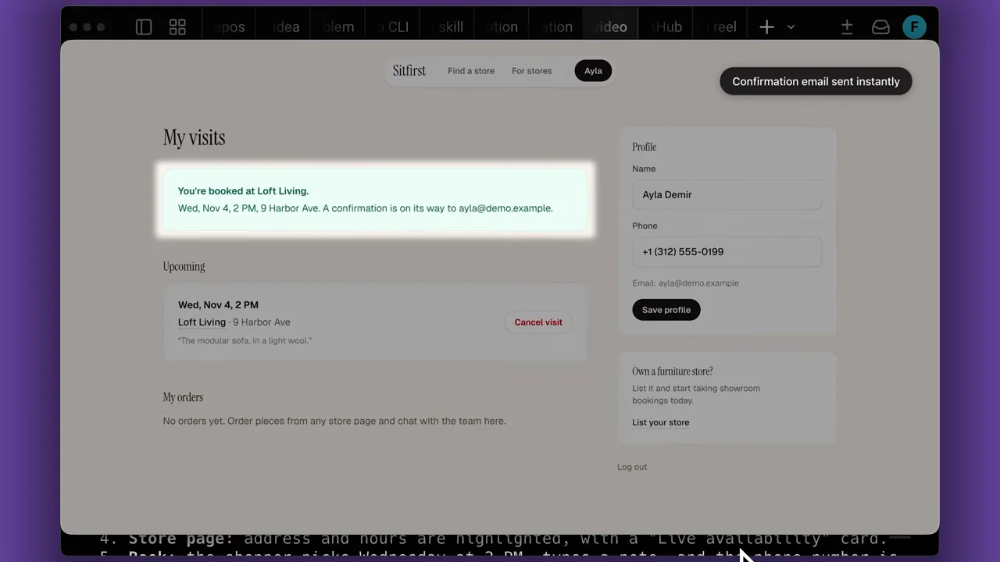
Explainroo: 낱말에 맞춰 움직이는 설명 영상
주제만 주면 대본, 보이스오버, 자막, 썸네일까지 받아요. 화면에서 app, files, cloud, synced가 파형의 해당 위치에 하나씩 묶여 있어요. 말이 나오는 순간 그 그림이 움직인다는 뜻이에요.
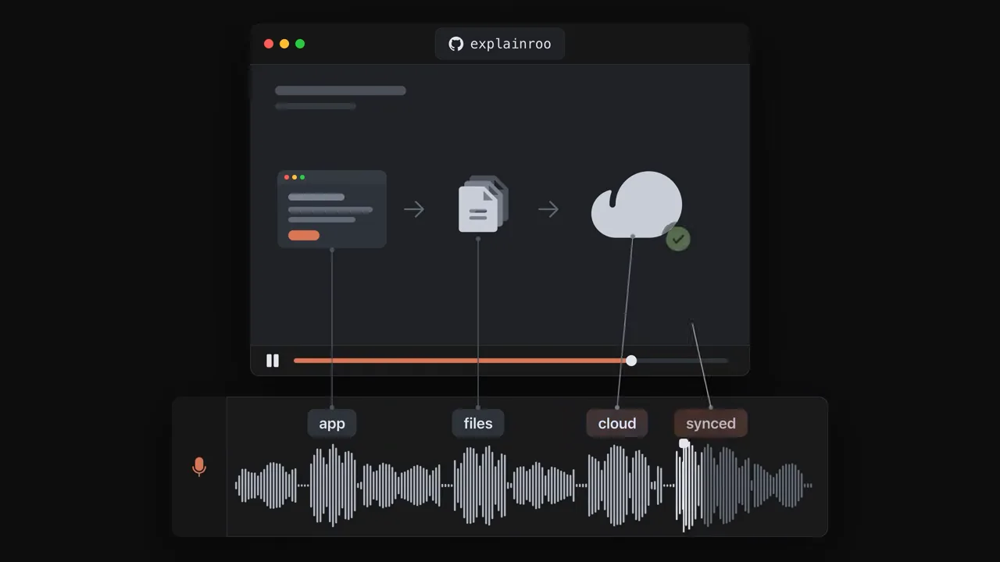
설치는 Claude Code에게 저장소에서 설치해 달라고 하면 돼요. 이때 모델 둘을 받아요. 왼쪽 Voice가 목소리를 만들고, 오른쪽 Listener가 그 목소리를 다시 들어요.
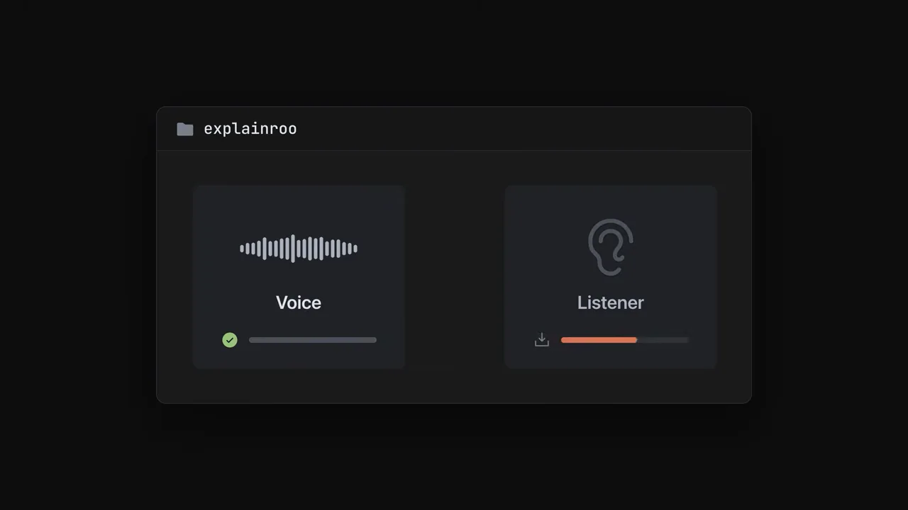
들어 보면 낱말마다 시각이 나와요. Skills 0.42s, live 0.96s, menu 2.08s 같은 값이에요. 이 표에 장면과 강조를 얹어요. 넘기기 전에는 레이아웃, 라우드니스, 음성을 알아들을 수 있는지까지 확인해요.
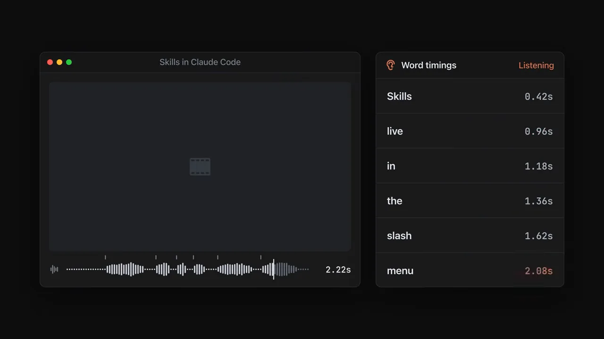
첫 결과는 빛나는 상자와 카드, 마지막 프레임의 슬로건이 있는 템플릿 같은 모습이었어요. 화면의 카드 세 장과 아래 알약 모양 버튼이 그 인상을 보여 줘요. 그래서 실제 Claude Code 세션 기준으로 다시 만들어 달라고 했어요.
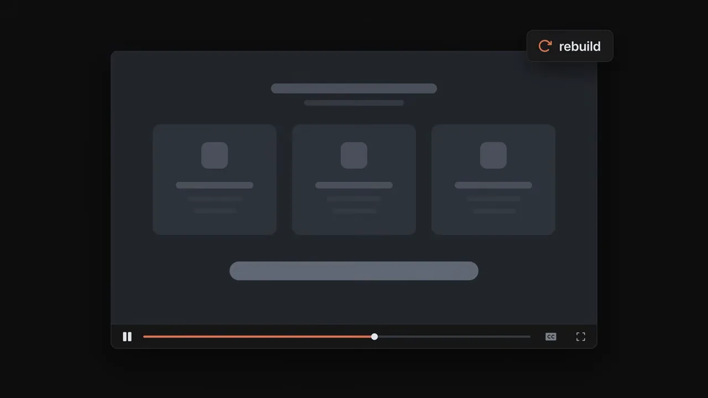
두 번째에는 진짜 스킬이 든 작은 데모 프로젝트를 만들고, 숨은 터미널에서 Claude Code를 돌려 단계마다 화면을 저장했어요. 맨 위 네 칸 claude, 시작 화면, Pondering, accept edits on이 그 기록이에요. 아래가 이를 다시 그려 넣은 영상이고요. 최종본은 28초예요.
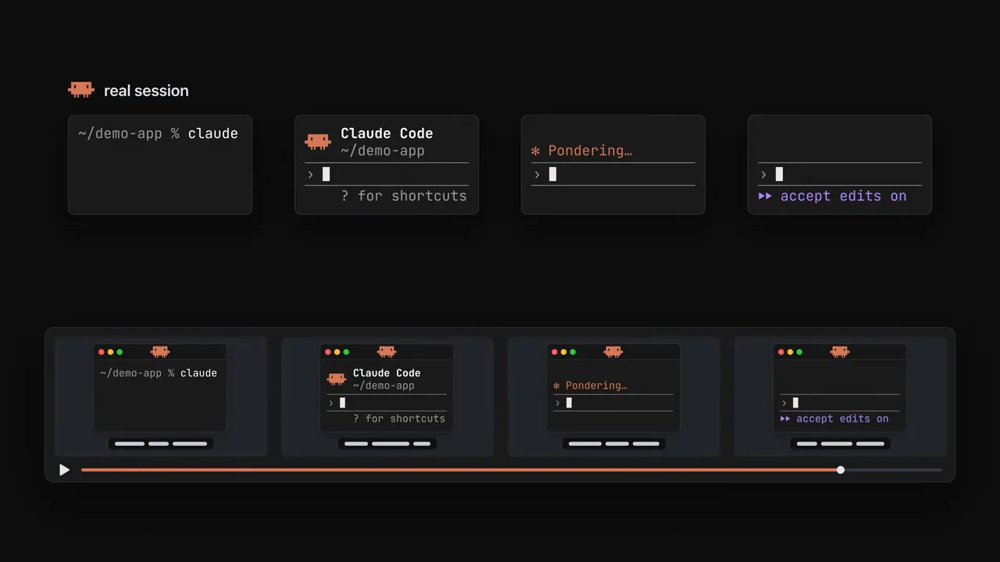
재서 확인하기: Video Director와 Earshot
에이전트는 영상을 보지도 듣지도 못해요. 그래서 마지막 두 도구는 숫자와 글로 잴 수 있게 만들어요. 앞의 도구들에도 검사가 있어서 한눈에 모아 봤어요.
| 도구 | 언제 | 무엇을 확인하나요 |
|---|---|---|
| Huashu Motion | 보여 주기 전 | 첫 3초 훅, 중간 움직임, 정점 전 멈춤 |
| Take One | 버전마다 | 독립 리뷰어의 점수, 미달이면 최대 3번 재작업 |
| Reanimate | 라운드마다 | 원본과 복제본의 프레임 비교, 보통 2~5번 |
| Explainroo | 넘기기 전 | 레이아웃, 라우드니스, 음성 명료도 |
| Video Director | 계획 뒤와 완성 뒤 | 글자 크기와 가독성, 깜빡임, 라우드니스, 리뷰어 |
| Earshot | 소리를 넣은 뒤 | 소리와 화면의 싱크 |
Video Director: 규칙과 두 검사 도구
Claude를 감독으로 세우는 스킬이에요. 규칙 묶음과 검사 도구 둘로 돼 있어요. 왼쪽 Hook 패널의 0:01.4는 훅이 3초 안에 들어왔는지, 휴대폰 화면 아래 표시는 글자가 폰에서 읽히는 크기인지를 보는 규칙이에요.
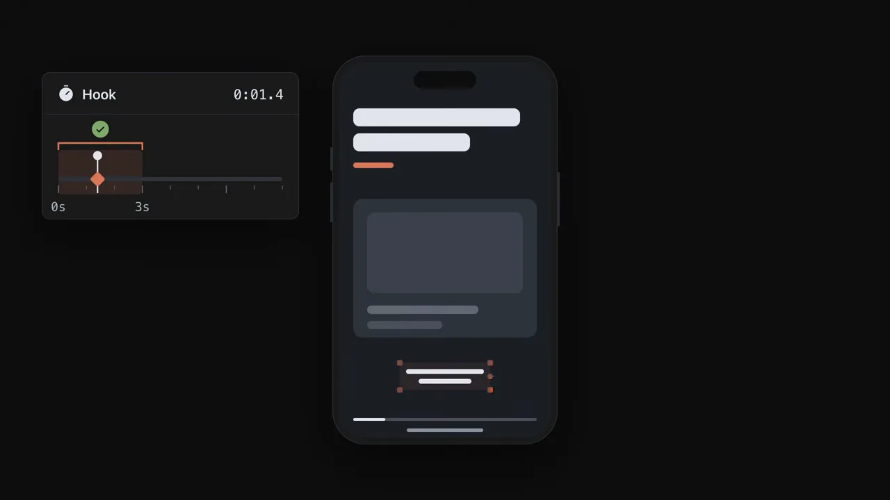
시험 소재는 idle compaction 팁 릴스였어요. 왜 해로운지 말하고 3초 안에 훅을 걸라고 요청했어요. 먼저 On screen과 Music 두 줄로 순간마다의 계획을 짜고, 초록 체크처럼 계획을 통과해야 Build로 넘어가요.
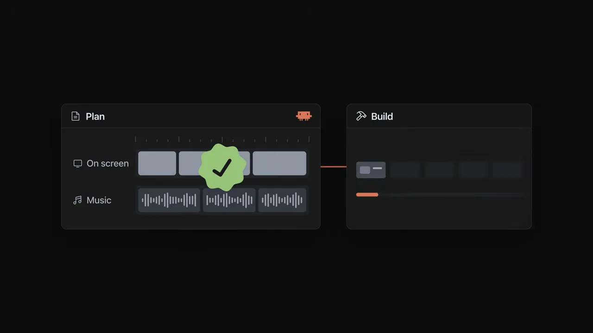
완성 뒤에는 글자마다 크기를 재요. 72px, 104px, 80px이 그 값이에요. 오른쪽 Checks의 Text와 Flashing, 아래 밝기 그래프가 깜빡임 확인이에요. 소리 크기도 함께 재요.
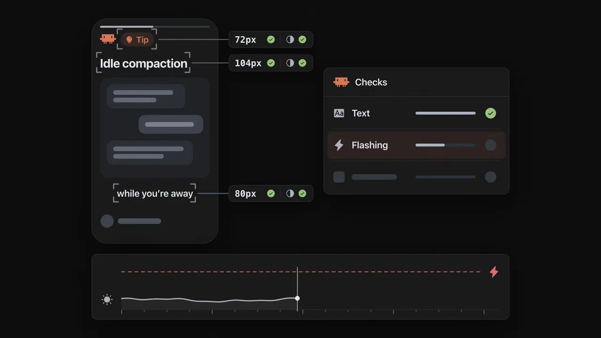
자체 검사를 다 통과해도 끝이 아니에요. 왼쪽 Plan, Build, Check가 초록이어도, 오른쪽 No history 리뷰어가 처음 보는 눈으로 영상을 다시 봐요.
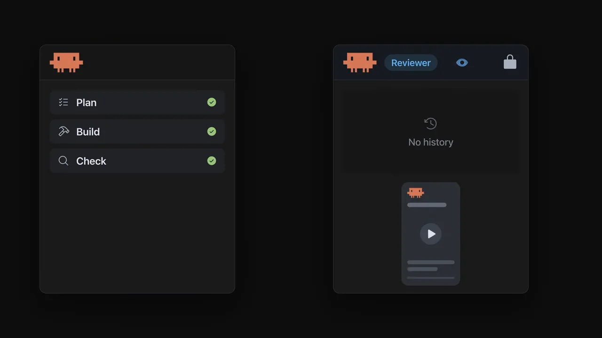
리뷰어의 요구로 바뀐 게 화면에 보여요. 지나치게 단정한 문장 둘을 Can lose context, Use it with care로 누그러뜨렸어요. 오른쪽의 0.3s → 0.6s는 늦춘 애니메이션이에요. 작은 라벨도 키웠어요.
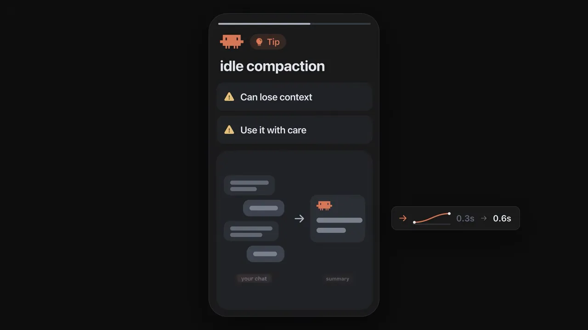
설치된 Claude Code 버전과 공식 문서로 주장도 하나하나 대조했어요. 최종 릴스는 28초이고, 해결책이 처음 2초 안에 화면에 나와요.
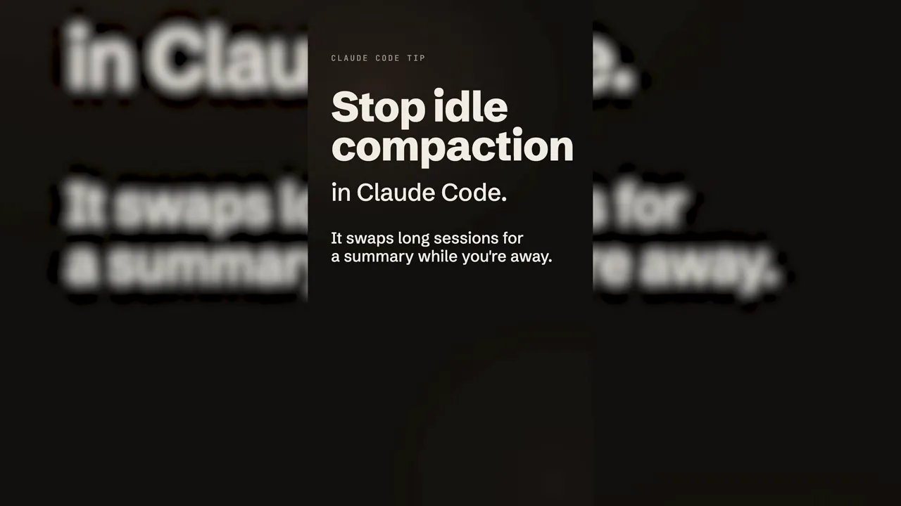
Earshot: 들을 수 없는 에이전트에게 귀를
영상이 마지막에 둔 이유는 이 한 문장에 있어요. 소리가 그림에 맞아야 하는데 Claude는 맞는지 들어 볼 방법이 없다는 거예요.
the sound in a video has to land on the picture and Claude has no way of hearing whether it does.
영상의 소리는 그림에 맞아떨어져야 하는데, Claude는 맞는지 들어 볼 방법이 없어요.
— 영상 13:45
소리를 Claude가 읽을 수 있는 글로 바꾸는 도구 모음이에요. 화면의 Notes에 0:02, 0:05처럼 시각별 설명이 쌓이고, 그걸 오른쪽 Claude가 읽어요. 각 소리가 무엇인지 쉬운 말로 적고, 그림 어디에 떨어지는지도 찾아 줘요.
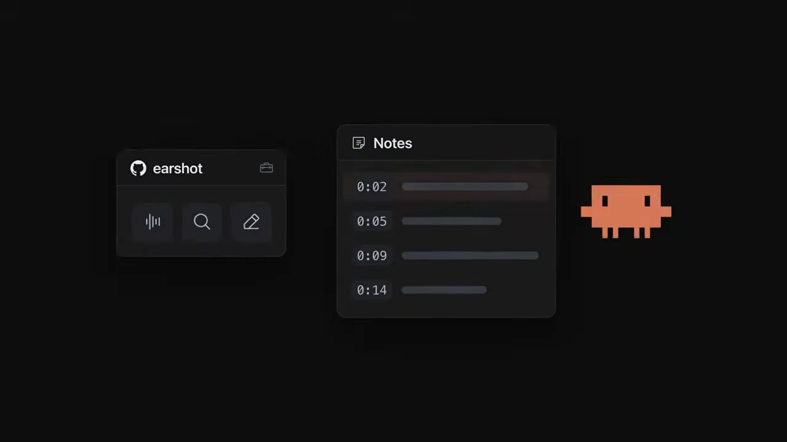
이 결과는 시트 한 장에 모여요. 위쪽 0:00부터 0:05까지의 눈금에 영상 프레임을 늘어놓고, 소리를 같은 시간축에 맞춰 싱크를 볼 수 있게 해요.
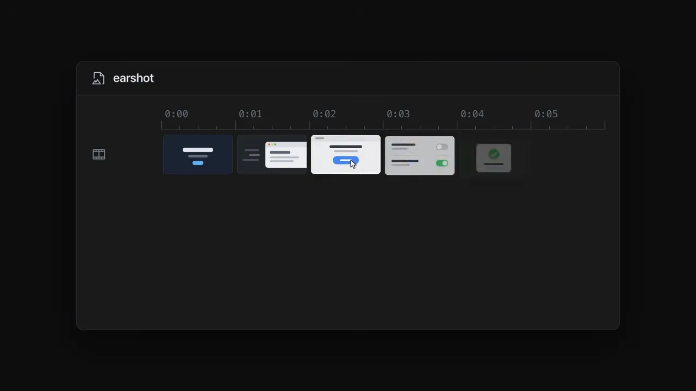
두 번째 스킬은 녹음한 음악과 효과음으로 사운드트랙 전체를 만들어요. 왼쪽 음원과 whoosh가 재료이고, 오른쪽 soundtrack 트랙에 배치돼요.
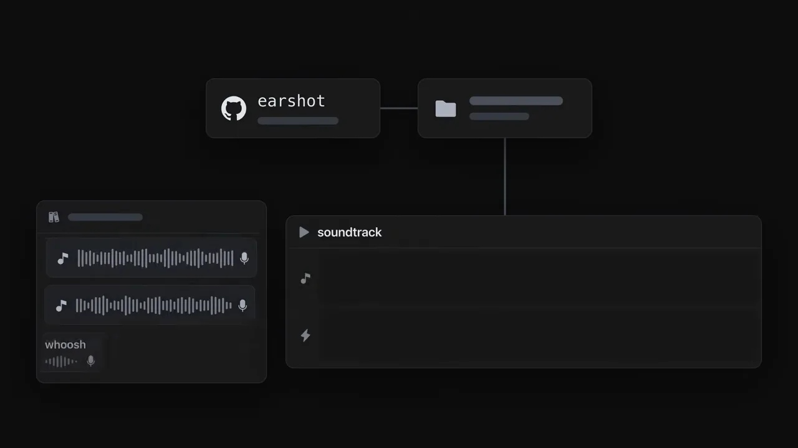
이 스킬은 음악의 정점을 영상의 가장 중요한 순간에 맞춘 뒤 Earshot으로 확인해요. 위아래 별 두 개가 프레임과 파형의 정점이 같은 자리에 있다는 표시예요.
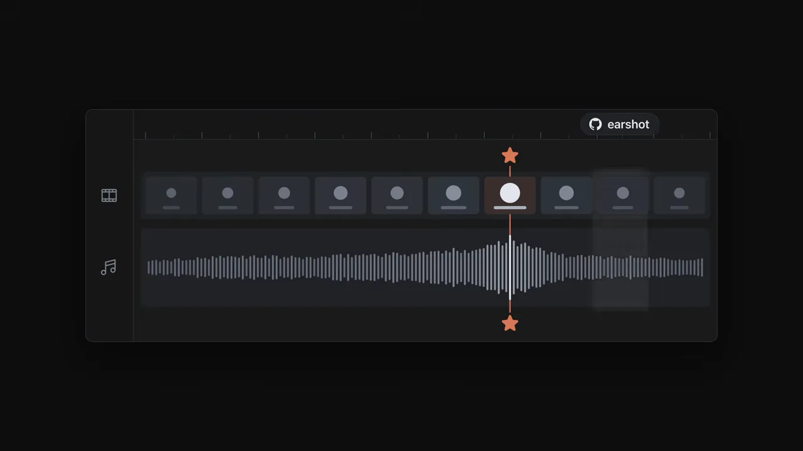
설치는 저장소 안내를 따라요. 소리 모델을 로컬에서 돌려서 용량을 꽤 차지한다고 영상이 먼저 짚어요. README에는 CPU(Central Processing Unit)만으로 돌아가며 Python 3.10 이상이 필요하고, 모델이 약 1.1GB라고 적혀 있어요.
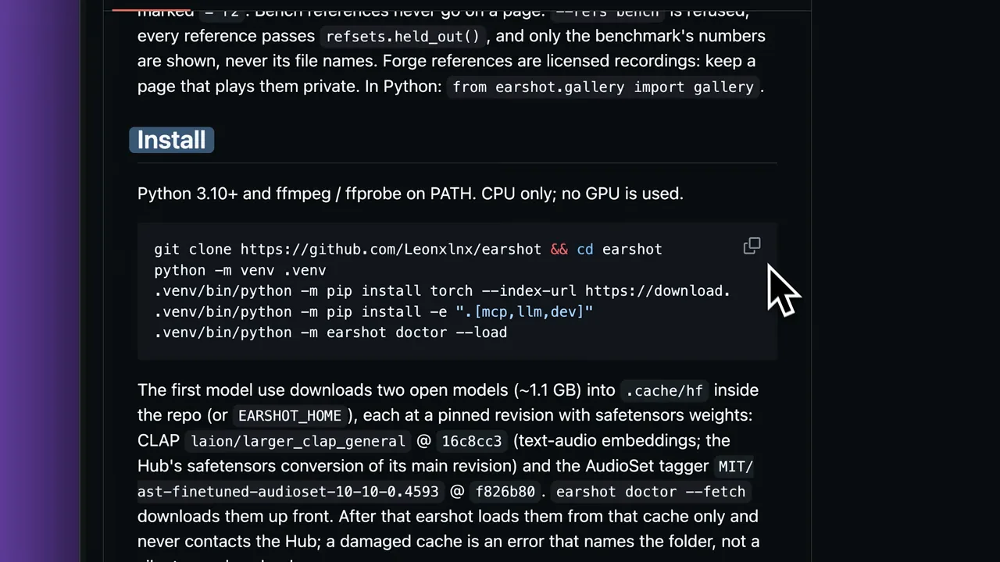
설치 결과를 보면 스킬 둘과 MCP(Model Context Protocol)를 함께 깔았어요. MCP server 줄에 사용자 수준 설정이라 모든 프로젝트에서 쓸 수 있다고 적혀 있고, 스킬도 ~/.claude/skills/에 연결했어요. 영상이 앞서 권한 프로젝트 단위 설치와는 달라요.
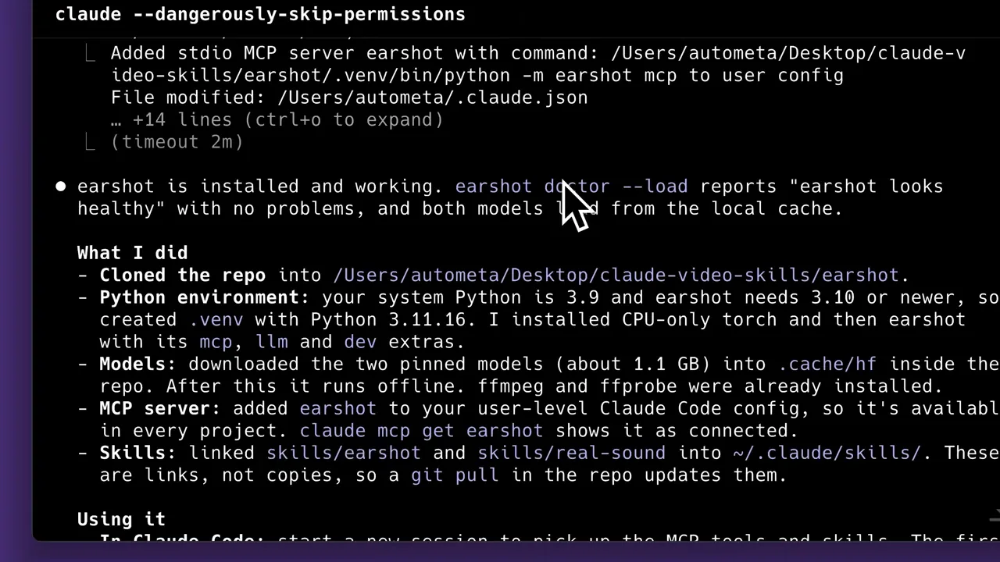
쓰임 하나는 음악 없는 클립에 음악 넣기예요. 프롬프트는 blow-my-mind.mp4에 Earshot을 돌려 어울리는 소리를 넣어 달라는 내용이에요. 영상은 여러 단계를 거친 뒤 장면마다 맞는 음악이 들어갔다고 전해요.
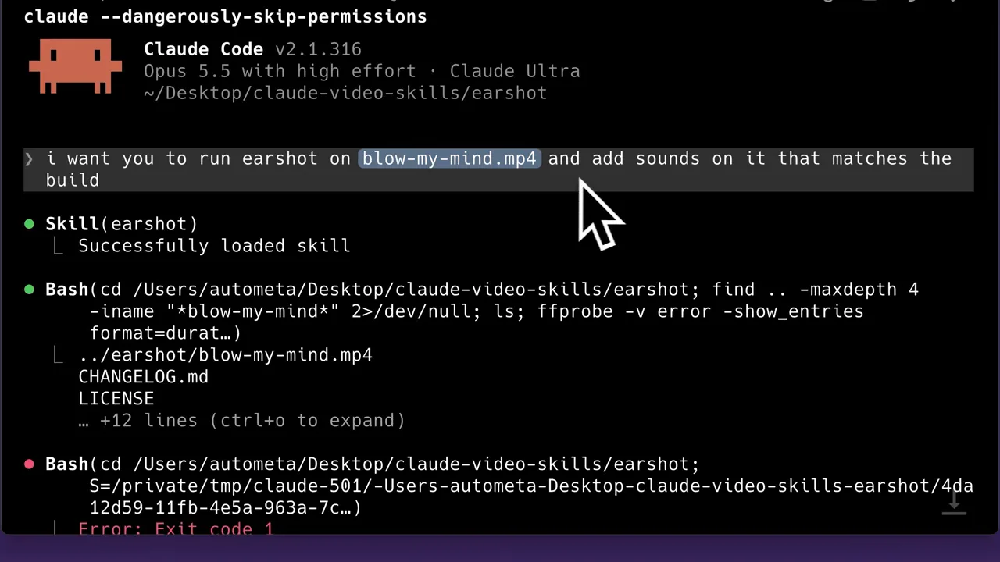